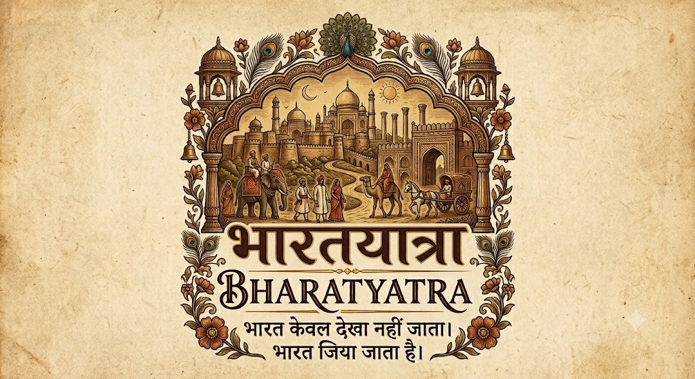

जनगणमन-अधिनायक जय हे भारत-भाग्यविधाता ! पंजाब सिंधु गुजरात मराठा द्राविड़ उत्कल बंग । विन्ध्य हिमाचल यमुना गंगा उच्छल जलधितरंग । तव शुभ नामे जागे, तव शुभ आशिष मागे, गाहे तव जय गाथा ॥ जनगणमंगलदायक जय हे भारत-भाग्यविधाता ! जय हे, जय हे, जय हे, जय जय जय जय हे ॥ अहरह तव आह्वान प्रचारित सुनि तव उदार वाणी, हिंदु बौद्ध सिख जैन पारसिका मुसलमान ख्रिस्तानी । पूरब पश्चिम आसे तव सिंहासन पासे, प्रेमहार हय गाथा ॥ जनगणैक्यविधायक जय हे भारत-भाग्यविधाता ! जय हे, जय हे, जय हे, जय जय जय जय हे ॥
वन्दे मातरम् ! सुजलाम् सुफलाम् मलयजशीतलाम्, शस्यश्यामलाम् मातरम् । वन्दे मातरम् ॥ शुभ्रज्योत्स्ना पुलकितयामिनीम्, फुल्लकुसुमित द्रुमदलशोभिनीम् । सुहासिनीम् सुमधुरभाषिणीम्, सुखदाम् वरदाम् मातरम् । वन्दे मातरम् ॥ कोटि-कोटि कण्ठ कल-कल निनाद कराइले, कोटि-कोटि भुजैधृत खरकरवाले, के बोले माँ तुमि अबले, बहुबलधारिणीं नमामि तारिणीं, रिपुदलवारिणीं मातरम् । वन्दे मातरम् ॥
India's soul lives in its celebrations — from temple rituals and folk dances to royal forts and vibrant festivals across every state.
From Himalayan landscapes and royal forts to sacred cities, tropical islands and coastal escapes — discover the many journeys that make Bharat unforgettable.
Discover hotels, resorts, homestays, hostels and unique stays according to budget, rating and preferences.
From authentic street food and regional dishes to highly rated restaurants and fine dining near every destination.
Get intelligent recommendations for flights, trains, buses, taxis, rental vehicles and local transport.
Sign up securely using your Gmail, email and password, with one government-verified document checked to confirm every traveler's identity.
Hotel, restaurant, homestay and PG owners are verified through their license and permit before they can list on BharatYatra.
Get instant emergency assistance and safety alerts, designed to work reliably even in low-connectivity areas.
One single QR code and a one-time payment covers attractions, transport and more — no repeated queues or payments.
If your preferred hotel is full, get AI-suggested alternatives within 10-20 km that are still well-connected by transport.
Explore history, culture and heritage explained in your own language — no need for a physical guide.
Get personalized recommendations based on your budget, source, destination and travel interests.
Discover and support low-footfall destinations, local handicrafts and small businesses through special promotions.
Build personalized day-by-day journeys based on time, interests, budget and destination.
Understand busy timings, estimated crowd levels and suggested visiting hours for attractions.
Organize your trip around your budget with intelligent suggestions for travel, stay, food and activities.
Plan your trip by month — see the best season for each destination and the ideal time of day to visit, morning to evening.
Stay updated with tourism department news, historical site research, GI-tagged local products and more.